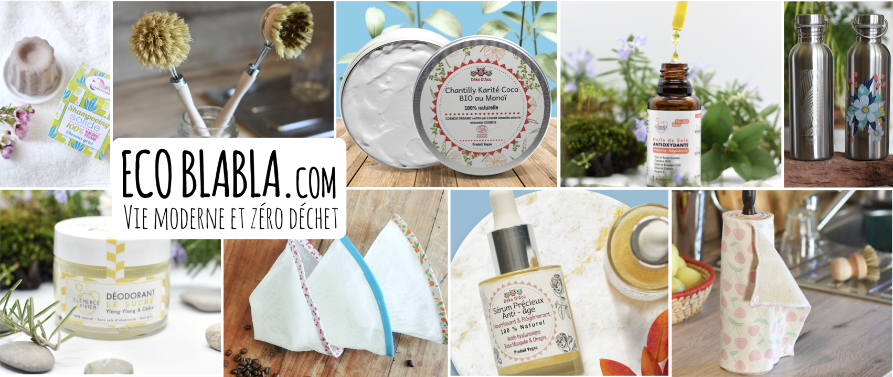
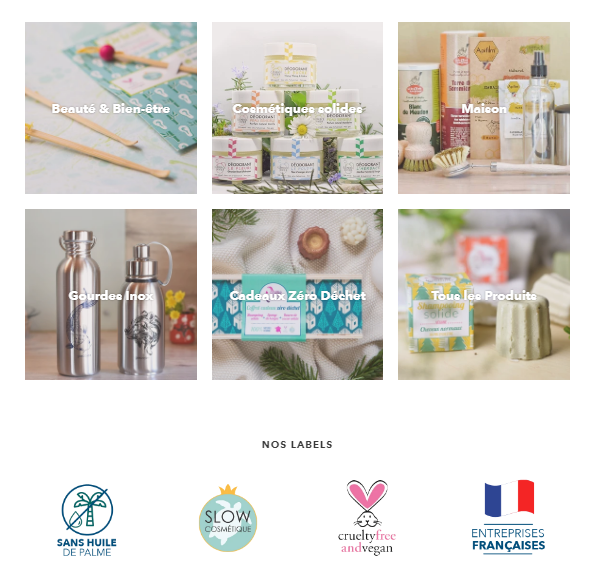

Article Ecoblabla
Ecoblabla, une marque éco-responsable.

« Le zéro-déchet doit être joyeux, il doit apporter du bien-être dans nos vies et non pas du stress. »
De nos jours, il existe une multitude de produits pour les cheveux, le visage ou le corps correspondant à des critères précis. Ces critères peuvent être nos types de peau, notre budget et même nos parfums favoris. Cependant, un bon nombre d’entre eux sont constitués d’ingrédients néfastes pour la peau et l’environnement. Je me suis alors intéressée aux produits dit « éco-responsable » qui pourraient être une bonne alternative aux produits du quotidien.
Pour en savoir plus, je me suis tournée vers la marque Ecoblabla. J’ai pu discuter avec son créateur : Franck.
Son histoire
Franck a commencé sa démarche zéro-déchet en 2017. Comme de nombreuses personnes s’intéressant à ce mode de vie, il a commencé à chercher des alternatives naturelles aux produits qu’il utilisait dans sa vie quotidienne.
Il s’est vite rendu compte qu’il n’était pas toujours simple de trouver des produits zéro-déchet en zone rurale. Il a donc décidé de créer une boutique en ligne qui rassemblerait toutes les alternatives éco-responsables afin de les rendre accessibles à tous.
En effet, le nombre de produits bio et éco-responsable explosent, la concurrence est également présente dans ces milieux, ce qui fait que les prix peuvent monter très haut.  @ecoblabla
La boutique Ecoblabla
Pour Franck, Ecoblabla est un nom simple, facile à retenir et qui représente correctement le zéro-déchet ou tout du moins, sa vision du zéro-déchet. Blabla correspondrait au dialogue. En effet, chacun à sa conception du zéro déchet. C’est pourquoi il est important de confronter nos points de vue, d’échanger, de discuter sur ce qui nous semble le mieux, le plus écologique et le plus naturel.
Ecoblabla est une marque éco-responsable. Tous leurs cosmétiques sont artisanaux, non testés sur les animaux, vegan, garantis sans huile de palme et 100% made in France ! En soit, synonyme de durable, responsable et éthique. Trois valeurs indispensables pour des produits sains et bon pour la planète.
De plus, les colis ne contiennent que des matériaux biodégradables et le calage se fait avec des journaux de récupération. Ce qui fait qu’ils n’utilisent jamais de papier bulle ou de matière plastique. Selon National Geographic, il y aurait cinq mille milliards de morceaux de plastique qui flotteraient dans nos océans actuellement. Il est donc primordial de réduire le plastique. Enfin, les envois se font par la poste, qui compense 100% de ses émissions carbones.
Il également important de souligner qu’Ecoblabla est une gamme de produits écologiques dont une partie des bénéfices est reversée à la protection de la faune sauvage Française.
Le Zéro déchet selon Franck
« Le zéro-déchet est pour moi avant tout, une philosophie. Il s’agit bien évidemment dans un premier temps, de réduire ses déchets à la maison, mais c’est aussi faire tout notre possible pour laisser un avenir aux générations futures. Réduire notre impact est devenu vital aujourd’hui, il ne s’agît plus seulement de nous, mais de l’avenir de l’Humanité tout entière. »
Si bien que de plus en plus de personnes prennent conscience de l’urgence climatique et intègrent de nouvelles habitudes dans leurs quotidiens, il faut aussi savoir se pardonner de ne pas être parfait.
En effet, nous avons tendance à trop vouloir en faire lorsqu’on se lance dans le zéro-dechet, il faudrait donc se laisser du temps, y aller par étapes, comme nous conseillerait Franck. L’important est d’opérer des changements qui vont être durable dans notre quotidien. Et si certaines choses ne nous plaisent pas ou nous correspondent pas, cela ne sert à rien de se culpabiliser. Le zéro-déchet doit être joyeux, il doit apporter du bien-être dans nos vies et non pas du stress.
En résumé, on n’adopte pas une vie zéro déchet du jour au lendemain. Il faut savoir prendre le temps de découvrir ce qui nous correspond et réfléchir à ce qu’on pourrait remplacer chez nous ou dans notre mode de vie. On ne cherche pas à supprimer ce que nous aimons mais à les remplacer par d’autres choses plus saines pour notre santé et pour l’environnement !
Un grand merci à Franck pour cet échange et ses conseils.
Pour en savoir plus sur les produits n’hésitez pas à aller faire un tour sur la boutique en ligne ! Avec la livraison offerte dès 50 euros d’achat !